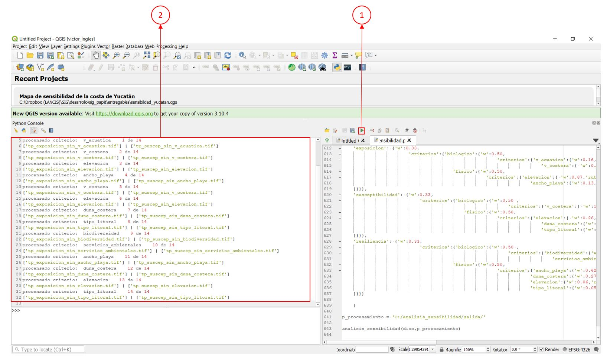

Análisis de sensibilidad¶
El análisis de sensibilidad mide la importancia de cada capa que se utiliza en índices como los que resultan de la aplicación de la combinación lineal ponderada. Este análisis, sirve para estimar el grado de influencia de cada capa que sirve de insumo en un análisis geoespacial.
Descargar el código sensibilidad.py.
Requerimientos generales¶
Para asegurar la ejecución correcta del código es importante verificar la instalación y funcionamiento de los siguientes elementos:
- Qgis 3.10 o superior y librerías de Osgeo4W
- Librerías python:
- copy
- pprint
- string
- osgeo/gdal
- gdal_calc
- os
Requerimientos generales de los insumos¶
Es importante que todas las capas raster cumplan con las siguientes condiciones:
- Misma proyección cartográfica
- Mismo tamaño de pixel
- Misma extensión de capa
- Mismo valor de NoData
Ejemplo¶
Insumos¶
Crear una (1)carpeta en el directorio raíz o en la unidad C que se llame analisis_sensibilidad,
para descargar los insumos hacer clic aqui (2)guarde el archivo insumos.zip
en la carpeta analisis_sensibilidad, posteriormente hacer clic derecho sobre el archivo y elegir la opción (3)Extract to insumos

Una vez terminado el proceso, crear en la carpeta analisis_sensibilidad una (4)c arpeta con el nombre salida

Procedimiento¶
1. Abrir el código¶
Abrir el código sensibilidad.py en Qgis 3.4 o superior, Para resolver cualquier duda al respecto, consultar la guia
2. Actualizar el diccionario¶
Ingresar la (1) ponderación del compontente según corresponda (Exposición, Susceptibilidad, Resiliencia), posteriormente ingresar la (2)ponderación del subcomponente (biológico,físico), Ingresar el (3)nombre de la capa raster de entrada con su respectiva (4)ponderación y su (5)ruta repita los pasos siguiendo la estructura y hasta ingresar cada una de las capas.

3. Indicar el direcctorio de salida¶
Indicar el directorio donde guardarán los archivos necesarios para realizar el análisis de sensibilidad y el archivo analisis_sensibilidad.csv que contendrá los resultados.
p_procesamiento = 'C:/analisis_sensibilidad/salida/'
4. Ejecutar el código¶
hacer clic en el (1) botón de ejecutar código, puede demorar 10 minutos o más dependiendo el procesador y memoria RAM que tenga el equipo en donde se ejecute, al concluir aparecerá en la (2) consola una lista que indica que ha procesado cada una de las capas.
Documentación dentro del código¶
Autores: Fidel Serrano,Victor Hernandez
Qgis 3.4 o superior
-
sensibilidad.crea_capa(ecuacion, rasters_input, salida)[fuente]¶ Esta función crea una capa mediante la calculadora raster de GDAL, esta función esta limitada hasta 14 variables en la ecuación.
Parámetros: - ecuacion (String) – ecuación expresada en formato gdal, es este caso es la salida de la funcion ecuacion_clp
- rasters_input (lista) – lista de los paths de los archivos rasters, salida de la función separa_ruta_pesos
- salida (String) – ruta con extensión tiff de la salida
-
sensibilidad.ecuacion_clp(pesos)[fuente]¶ Esta función recibe una lista de pesos para regresar la ecuación en la estructura requerida por gdal para la combinación lineal ponderada.
Parámetros: pesos (lista) – lista de los pesos de las capas, salida de la función separa_ruta_pesos
-
sensibilidad.ecuacion_vulnerabilidad_no_lineal(n=2)[fuente]¶ Esta función expresa la ecuación para el cálculo de la vulnerabilidad no lineal
\[ \begin{align}\begin{aligned}vulnerabilidad = \exp^{( 1 - sus)^{(1 + ca)}}\\donde: **exp** corresponde el índice de exposición, **sus** al índice de susceptibilidad y **ca** al índice de capacidad adaptativa\end{aligned}\end{align} \]Devuelve: la ecuación de la vulnerabilidad no líneal en formato de texto para gdal Tipo del valor devuelto: str
-
sensibilidad.get_region(path_layer)[fuente]¶ Esta función regresa en forma de cadena de texto las coordenadas de la extensión de una capa raster
param path_layer: ruta de la capa raster type path_layer: str
-
sensibilidad.lineal_decreciente(path_raster, path_raster_n)[fuente]¶ Función de valor líneal decreciente
-
sensibilidad.lista_criterios(dicc)[fuente]¶ Esta función regresa una lista de los criterios de un diccionario
Parámetros: dicc (diccionario python) – Diccionario que contiene nombres, rutas y pesos para el análisis de vulnerabilidad / sensibilidad
-
sensibilidad.media_raster(path_raster)[fuente]¶ Esta función regresa el promedio de todos los pixeles válidos de un archivo raster
Parámetros: path_raster (String) – Ruta del archivo raster
-
sensibilidad.nombre_capa(path_capa)[fuente]¶ Esta función regresa el nombre de una capa sin extensión
Parámetros: path_capa (str) – ruta de la capa
-
sensibilidad.quita(dicc, key)[fuente]¶ Esta función retira un elemento del diccionario y regresa un nuevo diccionario sin dicho elemento <<dicc_q>>.
Parámetros: - dicc (diccionario) – Diccionario con la estructura requerida
- key (String) – nombre de la variable a quitar
-
sensibilidad.quita_reescala(dicc, key)[fuente]¶ Función que integra las funciones quita y reescala y regresa un diccionario sin la variable y con los pesos reescalados.
Parámetros: - dicc (diccionario) – Diccionario con la estructura requerida
- key (String) – nombre de la variable a quitar
-
sensibilidad.raster_min_max(path_raster)[fuente]¶ Esta funcion regresa los valores maximos y minimos de una capa raster
Parámetros: path_raster (str) – ruta de la capa raster